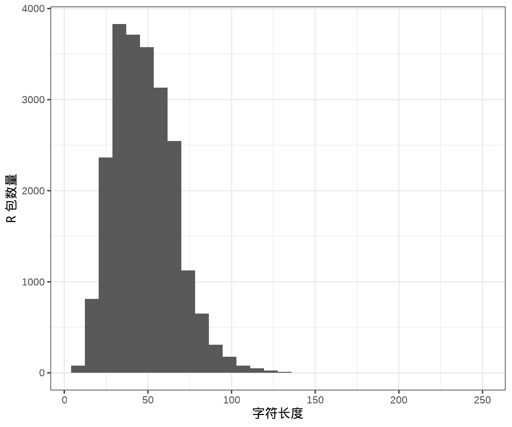
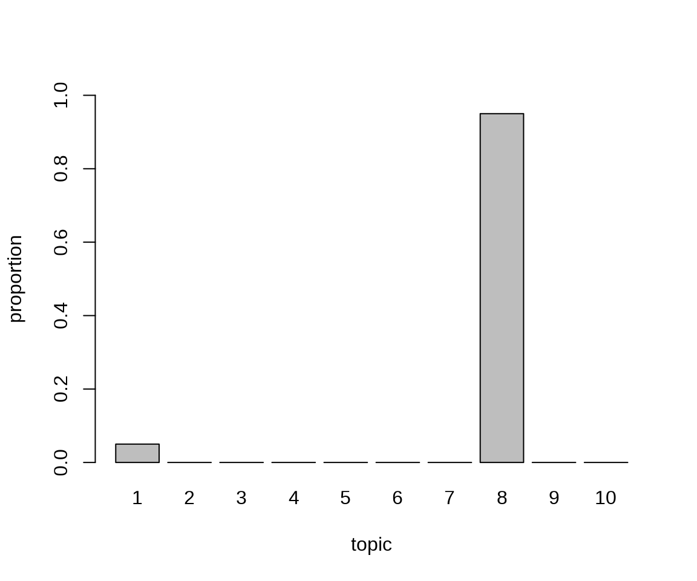

18 文本数据分析
R 语言官网的任务视图中有自然语言处理（Natural Language Processing）视图，它涵盖文本数据分析（Text Analysis）的内容。R 语言社区中有两本文本分析相关的著作，分别是《Text Mining with R》(Silge 和 Robinson 2017年)和《Supervised Machine Learning for Text Analysis in R》(Hvitfeldt 和 Silge 2021年)。
本文获取 CRAN 上发布的 R 包元数据中的描述字段，利用文本分析工具，实现 R 包主题分类。首先加载后续用到的一些文本分析和建模的 R 包。
接着，调用 tools 包的函数 CRAN_package_db() 获取 R 包元数据，为了方便后续重复使用，保存到本地。
去除重复的记录，保留 Package 和 Title 字段，该数据集共含有 22509 个 R 包的元数据。
#> Package
#> 1 AalenJohansen
#> 2 aamatch
#> 3 AATtools
#> 4 ABACUS
#> 5 abasequence
#> 6 abbreviate
#> Title
#> 1 Conditional Aalen-Johansen Estimation
#> 2 Artless Automatic Multivariate Matching for Observational\nStudies
#> 3 Reliability and Scoring Routines for the Approach-Avoidance Task
#> 4 Apps Based Activities for Communicating and Understanding\nStatistics
#> 5 Coding 'ABA' Patterns for Sequence Data
#> 6 Readable String Abbreviation18.1 语料预处理
- 去掉换行符
\n和单引号'，字母全部转小写等。
- 提取词干和词形还原。这一步比较麻烦，需要先使用 spacyr 包解析出词性，再根据词性使用不同的规则处理。做名词还原调用 SemNetCleaner 包的函数
singularize()，如 models / modeling 还原为 model， methods 还原为 method 等等。
#> [1] "method" "model" "data"library(spacyr)
# OpenMP
Sys.setenv(KMP_DUPLICATE_LIB_OK = TRUE)
# 初始化 不需要实体识别
spacy_initialize(model = "en_core_web_sm", entity = F)
# 准备解析文本向量
title_desc <- pdb$Title
names(title_desc) <- pdb$Package
# 解析文本需要一点时间约 1 分钟
title_token <- spacy_parse(x = title_desc, entity = F)
# 调用 data.table 操作数据提升效率
library(data.table)
title_token <- as.data.table(title_token)
# 生成新的一列作为 lemma
title_token$lemma2 <- title_token$lemma
# 处理动词和名词
title_token$lemma2 <- fcase(
title_token$pos %in% c("VERB", "AUX"), title_token$lemma,
title_token$pos %in% c("NOUN", "PROPN", "PRON"), vec_singularize(title_token$token),
!title_token$pos %in% c("VERB", "AUX", "NOUN", "PROPN", "PRON"), title_token$token
)
# 还原成向量
pdb <- aggregate(title_token, lemma2 ~ doc_id, paste, collapse = " ")
colnames(pdb) <- c("Package", "Title")
# 清理中间变量
rm(title_token, title_desc)R 包标题文本的长度分布
代码

接下来，要把该数据集整理成文本分析工具可以使用的数据类型 – 制作语料。
18.2 关键词检索
关键词检索就是从语料中查询某个字词及其在语料中的位置，函数 kwic() （函数名是 keywords-in-context 简写）用来做这个事。举两个例子，第一个例子查询语料中包含 Stan 的条目且精确匹配，返回检索词前后 3 个词。第二个例子查询语料中包含 text mining 的条目，采用正则方式匹配，返回检索词前后 2 个词。
#> Keyword-in-context with 38 matches.
#> [bayesdfa, 6] factor analysis dfa | stan |
#> [bayesforecast, 5] time series model | stan |
#> [BayesGmed, 6] mediation analysis use | stan |
#> [bayesvl, 9] network perform mcmc | stan |
#> [blmeco, 13] use r bug | stan |
#> [bmscstan, 7] case model use | stan |
#> [bnns, 4] bayesian neural network | stan |
#> [breathteststan, 1] | stan |
#> [brms, 5] regression model use | stan |
#> [CARME, 4] car mm modelling | stan |
#> [edstan, 1] | stan |
#> [flocker, 4] flexible occupancy estimation | stan |
#> [gptoolsStan, 5] process graph lattice | stan |
#> [greencrab.toolkit, 2] run | stan |
#> [hbamr, 7] mckelvey scaling via | stan |
#> [hbsaems, 8] estimation model use | stan |
#> [hsstan, 3] hierarchical shrinkage | stan |
#> [measr, 5] psychometric measurement use | stan |
#> [MetaStan, 5] meta analysis via | stan |
#> [mlts, 7] series model r | stan |
#> [pcFactorStan, 1] | stan |
#> [prome, 6] outcome data analysis | stan |
#> [rstan, 3] r interface | stan |
#> [rstanarm, 6] regression model via | stan |
#> [rstanemax, 4] emax model analysis | stan |
#> [rstantools, 6] r package interface | stan |
#> [RStanTVA, 3] tva model | stan |
#> [ssMousetrack, 9] track experiment via | stan |
#> [stan4bart, 5] additive regression tree | stan |
#> [StanHeaders, 4] c header file | stan |
#> [staninside, 3] facilitate use | stan |
#> [StanMoMo, 4] bayesian mortality modelling | stan |
#> [survstan, 6] regression model via | stan |
#> [tdcmStan, 3] automate creation | stan |
#> [tmbstan, 7] model object use | stan |
#> [trps, 6] position model use | stan |
#> [truncnormbayes, 7] normal distribution use | stan |
#> [ubms, 7] unmarked animal use | stan |
#>
#>
#>
#>
#>
#>
#>
#>
#> base fit gastric
#>
#>
#> model item response
#>
#>
#> model interpret green
#>
#>
#> model biomarker selection
#>
#>
#>
#> model pair comparison
#>
#>
#>
#>
#>
#> use r stantva
#>
#> sample parametric extension
#>
#> within package
#>
#>
#> code tdcms
#>
#>
#>
#> #> Keyword-in-context with 19 matches.
#> [MadanText, 2:3] persian | text mining |
#> [MadanTextNetwork, 2:3] persian | text mining |
#> [malaytextr, 1:2] | text mining |
#> [miRetrieve, 2:3] mirna | text mining |
#> [pubmed.mineR, 1:2] | text mining |
#> [PubMedMining, 1:2] | text mining |
#> [RcmdrPlugin.temis, 3:4] graphical integrate | text mining |
#> [text2vec, 2:3] modern | text mining |
#> [textmineR, 2:3] function | text mining |
#> [TextMiningGUI, 1:2] | text mining |
#> [tidytext, 1:2] | text mining |
#> [tm, 1:2] | text mining |
#> [tm.plugin.alceste, 8:9] use tm | text mining |
#> [tm.plugin.dc, 1:2] | text mining |
#> [tm.plugin.europresse, 6:7] use tm | text mining |
#> [tm.plugin.factiva, 6:7] use tm | text mining |
#> [tm.plugin.lexisnexis, 6:7] use tm | text mining |
#> [tm.plugin.mail, 1:2] | text mining |
#> [tmcn, 1:2] | text mining |
#>
#> tool frequency
#> tool co
#> bahasa malaysia
#> abstract
#> pubmed abstract
#> pubmed repository
#> solution
#> framework r
#> topic modeling
#> gui interface
#> use dplyr
#> package
#> framework
#> distribute corpus
#> framework
#> framework
#> framework
#> e mail
#> toolkit chinese18.3 高频词、词云
发现一些高频出现的词语或短语，通过这些高频词，这暗示一些信息。
#> data model analysis r use
#> 3730 2756 2306 1407 1235
#> function regression base tool estimation
#> 979 946 919 853 839
#> test method time bayesian distribution
#> 745 744 741 688 585
#> interface api network package linear
#> 548 539 527 503 496
#> plot algorithm series inference multivariate
#> 459 442 417 411 402
#> statistical design multiple variable effect
#> 387 381 363 360 350
#> estimate spatial file cluster selection
#> 344 341 341 341 338
#> create statistic shiny sample dataset
#> 335 326 320 317 305
#> modeling process random set via
#> 287 286 275 273 270
#> simulation visualization high robust value
#> 267 266 262 260 257R 语言作为一门主要用于数据获取、分析、处理、建模和可视化的统计语言，从 data、analysis、 model 和 regression 等这些高频词可以看出 R 语言面向的领域的特点。在文本分析领域，词云图是很常见的，用来展示文本中的突出信息。下图展示了词频不小于 100 的词。

18.4 关联词、短语
函数 textstat_collocations() 可以挖掘出词与词之间的关联度，下面统计出关联度很高的2个词的情况。
library(quanteda.textstats)
# 2个词 最少出现 50 次
word2 <- pdb_toks |>
tokens_select(
pattern = "^[aA-zZ]", valuetype = "regex",
case_insensitive = FALSE, padding = TRUE
) |>
textstat_collocations(min_count = 50, size = 2, tolower = FALSE)
word2 |>
subset(select = c("collocation", "count", "lambda", "z")) |>
(\(x) x[order(x$count, decreasing = T), ])()#> collocation count lambda z
#> 2 time series 390 8.410134 40.956545
#> 28 data analysis 249 1.917748 26.874453
#> 17 regression model 188 2.766641 31.206371
#> 1 high dimensional 173 8.256046 42.834939
#> 18 linear model 169 3.017284 31.147086
#> 16 data set 133 4.047101 31.276544
#> 26 meta analysis 125 4.912157 27.921690
#> 8 r interface 122 4.243407 35.516868
#> 3 sample size 111 7.215395 38.686341
#> 24 r package 98 3.396362 28.688433
#> 4 variable selection 97 5.472292 38.393389
#> 30 mixed model 96 3.298482 24.518502
#> 5 clinical trial 89 7.381455 37.078679
#> 10 confidence interval 89 7.983490 34.316566
#> 6 single cell 87 7.547635 36.808078
#> 22 least square 80 9.510684 29.199526
#> 7 machine learning 79 6.948648 36.540038
#> 45 analysis use 79 1.648730 13.813474
#> 33 linear regression 75 3.051243 23.510536
#> 43 data frame 75 6.317928 15.432733
#> 27 shiny app 74 8.132907 27.241296
#> 9 change point 73 7.203440 34.899773
#> 44 model base 72 1.823293 14.534360
#> 47 model use 70 1.512122 12.015240
#> 19 linear mixed 69 4.762209 30.695603
#> 23 principal component 69 8.611448 28.988080
#> 14 maximum likelihood 67 7.764512 32.123544
#> 39 effect model 67 2.519713 17.778816
#> 11 structural equation 66 7.194933 34.159026
#> 37 mixture model 66 2.906924 19.287433
#> 50 data use 66 1.027935 8.018226
#> 12 shiny application 65 6.124465 33.816839
#> 15 mixed effect 65 4.951229 31.357782
#> 40 neural network 65 7.937305 17.770993
#> 13 random forest 64 6.038883 32.700797
#> 21 generalize linear 64 4.578363 29.573412
#> 32 r markdown 64 5.654212 23.591816
#> 36 component analysis 64 3.960064 21.671622
#> 49 monte carlo 63 17.035933 8.501237
#> 48 goodness fit 59 12.225399 8.571668
#> 25 read write 58 7.882096 27.925273
#> 38 markov model 56 3.340163 18.865384
#> 42 functional data 55 2.577275 15.733731
#> 20 gaussian process 54 5.558851 30.695369
#> 31 quantile regression 54 4.369405 24.381027
#> 29 density estimation 52 4.516663 25.231081
#> 35 logistic regression 51 5.009119 23.375485
#> 41 survival analysis 51 2.605927 16.294877
#> 46 survival data 51 2.093798 13.141149
#> 34 utility function 50 4.031428 23.406819下面统计出关联度很高的3个词的情况。
# 3 个词 最少出现 20 次
word3 <- pdb_toks |>
tokens_select(
pattern = "^[aA-zZ]", valuetype = "regex",
case_insensitive = FALSE, padding = TRUE
) |>
textstat_collocations(min_count = 20, size = 3, tolower = FALSE)
word3 |>
subset(select = c("collocation", "count", "lambda", "z")) |>
(\(x) x[order(x$count, decreasing = T), ])()#> collocation count lambda z
#> 1 mixed effect model 52 2.74933933 5.26421311
#> 16 linear mixed model 51 0.29724376 0.79122768
#> 15 time series analysis 44 1.22245001 0.82987380
#> 29 principal component analysis 43 -1.14777702 -1.43212297
#> 8 generalized linear model 41 0.86637873 1.61224892
#> 13 high dimensional data 40 1.11204011 1.20333574
#> 14 change point detection 38 1.80608692 1.14096970
#> 30 generalize linear model 38 -0.83256107 -2.43034663
#> 4 small area estimation 37 3.80872471 2.19968436
#> 6 item response theory 37 3.56746831 1.74474274
#> 27 time series data 35 -0.64298804 -0.72305884
#> 23 goodness fit test 34 0.05365225 0.02171631
#> 21 maximum likelihood estimation 32 0.51772646 0.35048085
#> 12 structural equation model 31 0.92777932 1.24716444
#> 18 sample size calculation 31 0.72939612 0.43875914
#> 3 model base clustering 26 4.66999216 3.16260592
#> 19 via windsor.ai api 26 0.91318357 0.41485214
#> 26 partial least square 26 -0.61192195 -0.29897908
#> 5 graphical user interface 25 4.09997307 1.98995699
#> 7 network meta analysis 25 2.49751077 1.68333680
#> 24 time series forecast 25 -0.07179827 -0.03534369
#> 11 structural equation modeling 24 2.57880356 1.27148555
#> 9 hide markov model 23 2.36565975 1.37903147
#> 20 kernel density estimation 23 0.31263525 0.39090311
#> 10 power sample size 22 2.64371045 1.30480977
#> 17 time series model 22 1.03679417 0.69749215
#> 28 genome wide association 22 -2.05849808 -1.17948789
#> 25 generalize additive model 21 -0.08469047 -0.16409359
#> 2 large language model 20 7.38549608 3.58810691
#> 22 amazon web service 20 0.30375485 0.14705747
#> 31 linear regression model 20 -1.64473425 -4.90001486其中有两个词组 via windsor.ai api 和 amazon web service 乍一看有点奇怪，其实是这两个公司发布的一系列 R 包导致。
代码


18.5 特征共现网络
在文档 Token 化之后，函数 dfm() 构建文档特征（词）矩阵，函数 topfeatures() 提取文档-词矩阵中的主要特征（词）。
#> data model analysis r use function regression
#> 3730 2756 2306 1407 1235 979 946
#> base tool estimation
#> 919 853 839在文档 Token 化之后，函数 fcm() 构建特征（词）共现矩阵，统计词频，挑选前 30 个高频词。
下图以网络图方式展示词与词之间的关联度，关联度越高，词与词之间的边越宽。

18.6 词频文档统计
TF-IDF 词频与逆文档频率（term frequency-inverse document frequency weighting）
#> Document-feature matrix of: 6 documents, 6 features (83.33% sparse) and 0 docvars.
#> features
#> docs artless automatic multivariate matching observational study
#> AalenJohansen 0 0 0 0 0 0
#> aamatch 2.409702 1.35011 0.9696616 1.417336 1.473917 1.115005
#> AATtools 0 0 0 0 0 0
#> ABACUS 0 0 0 0 0 0
#> abasequence 0 0 0 0 0 0
#> abbreviate 0 0 0 0 0 0每个特征的文档频率
#> artless automatic multivariate matching observational
#> 1 82 399 62 49
#> study reliability scoring routine approach
#> 218 41 22 43 120
#> avoidance
#> 1特征频次作为权重
#> Document-feature matrix of: 6 documents, 6 features (83.33% sparse) and 0 docvars.
#> features
#> docs artless automatic multivariate matching observational study
#> AalenJohansen 0 0 0 0 0 0
#> aamatch 1 1 1 1 1 1
#> AATtools 0 0 0 0 0 0
#> ABACUS 0 0 0 0 0 0
#> abasequence 0 0 0 0 0 0
#> abbreviate 0 0 0 0 0 018.7 潜在语义分析
文档特征矩阵通过 SVD 分解将高维特征（15K）降至低维（10），获得文档主题矩阵与主题特征矩阵两个低秩矩阵，SVD 分解的作用在于去掉大量的噪声，取主要的信号部分（特征值非零的矩阵块）。
#> [,1] [,2] [,3] [,4]
#> AalenJohansen 0.0032244435 0.0034422004 -1.174290e-03 0.0048330691
#> aamatch 0.0016669718 -0.0001996528 1.901817e-03 0.0003044778
#> AATtools 0.0005910258 0.0003213166 -5.354244e-05 0.0004353606
#> ABACUS 0.0024508906 -0.0009248310 -1.526348e-03 -0.0038587107
#> abasequence 0.0231436077 -0.0405508667 -2.054412e-02 0.0176330651
#> abbreviate 0.0000000000 0.0000000000 0.000000e+00 0.0000000000
#> [,5] [,6] [,7] [,8]
#> AalenJohansen -0.0022590453 -2.047450e-03 0.001948249 0.008181071
#> aamatch 0.0013131009 1.871955e-03 -0.001403431 0.001275321
#> AATtools -0.0004307888 2.911412e-06 -0.000511792 0.002979356
#> ABACUS -0.0040844270 2.645612e-03 0.004624901 0.004921382
#> abasequence 0.0068779951 -1.980010e-04 -0.002036734 -0.003039419
#> abbreviate 0.0000000000 0.000000e+00 0.000000000 0.000000000
#> [,9] [,10]
#> AalenJohansen 0.0213564284 0.0544342978
#> aamatch 0.0046599753 0.0099656394
#> AATtools 0.0001866527 0.0005729931
#> ABACUS 0.0143699113 0.0135899042
#> abasequence 0.0002911794 -0.0042777371
#> abbreviate 0.0000000000 0.0000000000#> 10 x 2 Matrix of class "dgeMatrix"
#>
#> docs [,1] [,2]
#> BSGW 0.059296854 0.0518986784
#> bshazard 0.002673565 -0.0012579306
#> bSi 0.001556409 0.0001919452
#> bsicons 0.001247889 -0.0010824073
#> bSims 0.002837469 -0.0005654528
#> bsitar 0.042129861 0.0125881590
#> bskyr 0.000000000 0.0000000000
#> BSL 0.025800407 0.0244068949
#> bslib 0.001122934 -0.0009896259
#> BsMD 0.019460198 0.022138688018.8 文本主题探索
text2vec 包的实现 LDA（Latent Dirichlet Allocation）算法做文本主题建模。
library(text2vec)
# 创建 Tokens
pdb_tokens <- word_tokenizer(pdb$Title)
pdb_itokens <- itoken(pdb_tokens, ids = pdb$Package, progressbar = FALSE)
# 去掉停止词
pdb_v <- create_vocabulary(pdb_itokens, stopwords = stopwords("en"))
# 词频不小于 10 的词
# 文档比例不大于 0.2
pdb_v <- prune_vocabulary(pdb_v, term_count_min = 10, doc_proportion_max = 0.2)
pdb_v#> Number of docs: 22509
#> 175 stopwords: i, me, my, myself, we, our ...
#> ngram_min = 1; ngram_max = 1
#> Vocabulary:
#> term term_count doc_count
#> <char> <int> <int>
#> 1: 2019 10 7
#> 2: 4 10 10
#> 3: account 10 10
#> 4: active 10 10
#> 5: allow 10 10
#> ---
#> 1672: use 1235 1235
#> 1673: r 1408 1388
#> 1674: analysis 2306 2288
#> 1675: model 2756 2687
#> 1676: data 3730 3634vectorizer <- vocab_vectorizer(pdb_v)
pdb_dtm <- create_dtm(pdb_itokens, vectorizer, type = "dgTMatrix")
lda_model <- LDA$new(n_topics = 10, doc_topic_prior = 0.1, topic_word_prior = 0.01)
doc_topic_distr <- lda_model$fit_transform(
x = pdb_dtm, n_iter = 1000,
convergence_tol = 0.001, n_check_convergence = 25,
progressbar = FALSE
)代码

每个主题抽取 Top 的 10 个词
#> [,1] [,2] [,3] [,4] [,5]
#> [1,] "data" "test" "estimation" "model" "analysis"
#> [2,] "api" "algorithm" "model" "regression" "data"
#> [3,] "r" "distribution" "distribution" "linear" "gene"
#> [4,] "interface" "base" "function" "bayesian" "cell"
#> [5,] "access" "model" "interval" "variable" "use"
#> [6,] "file" "dimensional" "sample" "selection" "tool"
#> [7,] "client" "high" "estimate" "estimation" "study"
#> [8,] "database" "matrix" "regression" "mixture" "single"
#> [9,] "read" "estimation" "likelihood" "generalize" "component"
#> [10,] "wrapper" "two" "confidence" "use" "sequence"
#> [,6] [,7] [,8] [,9] [,10]
#> [1,] "model" "data" "r" "time" "analysis"
#> [2,] "analysis" "function" "shiny" "analysis" "design"
#> [3,] "random" "r" "plot" "data" "data"
#> [4,] "effect" "package" "create" "series" "tool"
#> [5,] "data" "tool" "use" "model" "trial"
#> [6,] "test" "utility" "ggplot2" "network" "clinical"
#> [7,] "network" "dataset" "table" "method" "multi"
#> [8,] "forest" "use" "interactive" "detection" "method"
#> [9,] "inference" "analysis" "application" "bayesian" "base"
#> [10,] "method" "statistic" "object" "spatial" "experiment"TODO: 使用交叉验证配合 perplexity 度量获取最佳的主题个数 (Zhang 等 2023年)
18.9 文本相似性
在互联网 App 中，计算文本之间的相似性有很多应用，如搜索、推荐和广告的召回阶段，根据用户输入的文本召回相关的内容。
text2vec 包实现了 GloVe 模型 — 一种词向量表示的无监督学习算法。从语料中生成词共现矩阵，基于此训练数据，算法得出的是词向量空间中的线性子结构。GloVe 度量了词与词之间共现的可能性，词与词抽象的概念差异可以表示成向量的差异。下面继续基于这份文本数据，生成词共现矩阵，计算文本相似度。
参考 quanteda 包官网对 text2vec 包GloVe 模块的介绍。
GloVe 模型
#> [1] 2748 50#> [1] 50 2748计算距离
cpp <- word_vectors["rcpp", , drop = FALSE] -
word_vectors["stan", , drop = FALSE] +
word_vectors["python", , drop = FALSE]
# 文档的余弦相似性 取一个小数据
library(quanteda.textstats)
cos_sim <- textstat_simil(
x = as.dfm(word_vectors), y = as.dfm(cpp),
margin = "documents", method = "cosine")
# 召回的相关词
head(sort(cos_sim[, 1], decreasing = TRUE), 5)#> rcpp python binding module user
#> 0.6622291 0.5732822 0.5723647 0.5440260 0.497387118.10 习题
text2vec 包内置的电影评论数据集
movie_review中 sentiment（表示正面或负面评价）列作为响应变量，构建二分类模型，对用户的一段评论分类。（提示：词向量化后，采用 glmnet 包做交叉验证调整参数、模型）根据任务视图对 R 包的标记，建立有监督的多分类模型，评估模型的分类效果，并对尚未标记的 R 包分类。（提示：一个 R 包可能同时属于多个任务视图，考虑使用 xgboost 包）